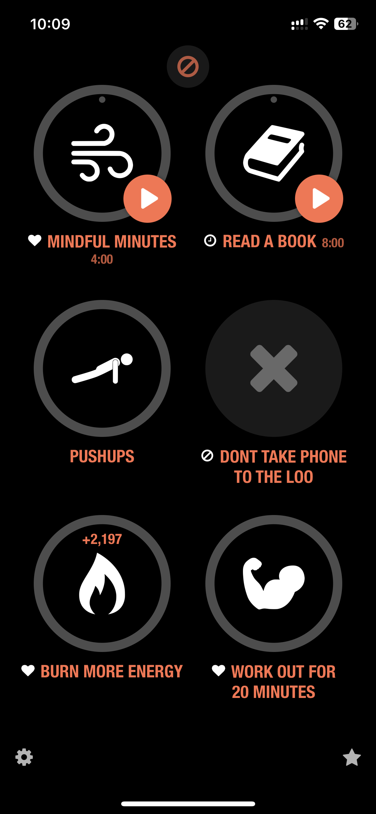

Holistically everything functions in cycles and patterns. Bad times have to be followed by good times, just like dawn after dusk. This perpetual cycle signifies flux in the way of the world, that good times will evetually be followed by the bad days and this is inevitable. Acceptance and learning to handle both the good and bad is all that is in our control. We went through a nightmare, and I can only hope we’re moving towards a glorious sunrise, stronger than ever. But at the same time I realised I need to be a better version of myself so that I can handle myself and then you to get us through everything. This hunger to improve and be a better version of myself is again a cycle of my own. A cycle that is powered by you.
Every thing has a pattern. Everyone has a pattern.
If I were to think of patterns in terms of human beings, f(Humans) = habits.
People are a function of the habits that they follow. For eg, a child who has been playing cricket everyday since he was 3-8 years of age will have a higher probability of making it to a national cricket team than an overnight success. The key here is consistency. If you perform an action consistently over a long period of time, our brain stops putting any “cognitive resources” (:p) and it becomes second nature. What does all this gyan have to do with us? As I mentioned, we went through a bad phase, and naturally a cycle of good times is bound to follow. I want to be prepared for this by being a better version of myself for you, intentionally setting better patterns by following a good set of habits. I thought long and hard for the areas where I could improve and a series of habits that I should follow to achieve them. This is what I came up with.

These are simple things to follow. Until I will get habituated to them. Meditation for controlling my anxiety. Reading for increasing my wisdom and gaining perspective. Pushups because it is a great exercise that targets multiple muscles. Eating in a calorific deficit and exercising so that I eventually will grow leaner and stronger. If I should do all of these everyday in the simplest way possible, I am bound to be a calmer, wiser and leaner version of myself in the future. I like this chain of thought because it is so simple and so clear. The only thing that matters is consistency. Discipline. Setting up my own patterns, so that I can intentionally be a better person the next time you meet me. Ambitious? I don’t think so. Don’t know if you noticed but I always tried to give you the best of everything. You need chewing gum? It has to be the fanciest and the most effective piece of chewing gum ever. A cup of hot water in the morning? It better be at the most perfect temperature for you. And I thought, if were to accept me again, which I hope you do, you should deserve the best version of me at any given moment. Madness? Aashiqi? I don’t know what to call this.
PS: I think thoda bahot to skill h writing ka mera. Especially when I can mix life philosophy and my love for you in the same post.
Lastly, there’s something called a keystone habit. Certain habits that are bound to have a cascading net positive effect on all other aspects of your life. Exercising for example. If you start exercising everyday, you will eventually start eating healthy, sleeping better and thinking clearly. Keystone habit is like the MVP of habits that you should choose that is bound to improve your life. No points for guessing what my keystone habit is. Eating maggi nahi idiot. Loving you. Loving you since you’ve come in my life has made me a better person for you. I learnt how to express myself, how to take care of you, how to make you happy, how to calm you down and also how to hit your baniya nerves :p All because of how much I love you. And I just wanted to intentionally try to be even more better. All for you. Atleast until one day you come up to me to say you are happy to have me by your side…